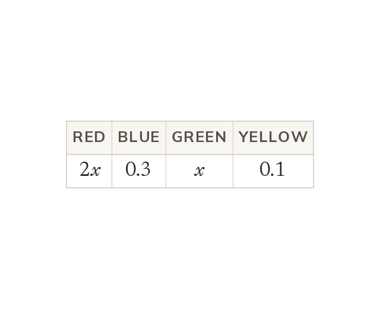

Probabilities that must total
All the outcomes' probabilities sum to
Written with x, that sum is an equation.
All the outcomes of one event, or one set of branches, have probabilities that sum to
When those probabilities are written with x, that total is an equation.
When those probabilities are written with x, that total is an equation.